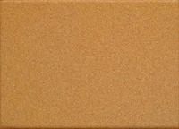

Technical Blog, Week 2

Understanding Margin Border & Padding in CSS
Hello everyone, I am going to try to demystify the concepts of margin, padding and border in CSS. Let's get started.
1. The Box Model
First we need to understand that in Web Design every element is a box. Here say it with me ....... "every element is a box......great.... you have a lovely voice."
Here we have a div that is 100 pixels high by 100 pixels wide.
Notice how it is a box?
-Here we have another div that is 200 pixels high by 200 pixels wide.
Take notice and you'll see it's just another box.
-Now just like boxes in real life you can stack them
-and nest them....
When we arrange page content in this fashion it's known as the box model. We use margin, padding, and border to specify the spacing between box elements.
-You can think of page elements like a cork board that we post content to.
Imagine this cork board as a div.
-Now if you want to be productive with your cork board .... you need a wall to hang it on. The wall that your element hangs on is it's parent element. This parent can be many things .......a body tag, li tag, even another div. What the tag is isn't very important, the important thing you need to understand is that the parent element is the box that your current box lives in. Or in other words the wall that your cork board hangs on.
Wow our web handyman installed that corkboard nicely
2. Margin
Margin is the spacial relation of an element to it's parent. So for our example...... the relation of our cork board to our wall.
-Here we will install our cork board to our wall with no margin.
By default is aligns nice and flush with the top left corner of the wall.
-Here we will install our cork board to our wall with a left-margin of 50 pixels.
See the spacing from the left of the wall? That's your margin.
-Next we will install our cork board to our wall with a top-margin of 50 pixels.
See the spacing from the top of the wall?
-You can also specify more than one margin. Here we will install our cork board to our wall with a top-margin of 50 pixels and a left-margin of 50px.
See the spacing from the top and right sides of the wall?
-You can also specify margins from the bottom and right sides of the wall. Here we will install our cork board to our wall with a bottom-margin of 50 pixels and a right-margin of 50px.
Here we have floated our cork board to the right. And you can see that our cork board has a margin 50 pixels from the right. Also note that I have inserted another cork board to show that there is a margin of 50 pixels below our initial cork board.
-So to summarize .....Margin occupies the space around the outside of an element (our cork board).
3. Border
-Understanding border is pretty simple. Border is simply the area around the physical space that our cork board takes up.
In the example above we have hung up two cork boards one with a border of 1 pixel and another with a border of 5 pixels. It's simple as that. Border is just the area located directly around an element.
4. Padding
-And finally we get to padding. Padding is the area within the interior of the border that is occupied before any content is displayed in your element. Just stay with me.
Here our cork board has a nice centered margin and 50 pixels from the top. And let's say this yellow post-it note is the content within our cork board. By default content will align to the upper left corner just like we saw when we first hung the cork board on the wall. We can set spacing of the content which occupies our cork board by using padding. Let's give it a try.
-Let's setup some padding to this cork board
We have padded the content of our cork board with 25 pixels to the left and from the top. Padding is true to it's name. It just adds padding around the interior of the border in your element.
4. Summary
- Margin: Sets the space around the element.
- Border: Shows the area directly around your element and is helpful in showing the boundaries of your actual element.
- Padding: Sets the spacing in the interior of your element. (pads content).
I hope you've found this tutorial helpful. If you have any questions or comments feel free to send me a message on my contact page.
For more information on margin, padding, and border check out these links:
- Brendan R. Miranda